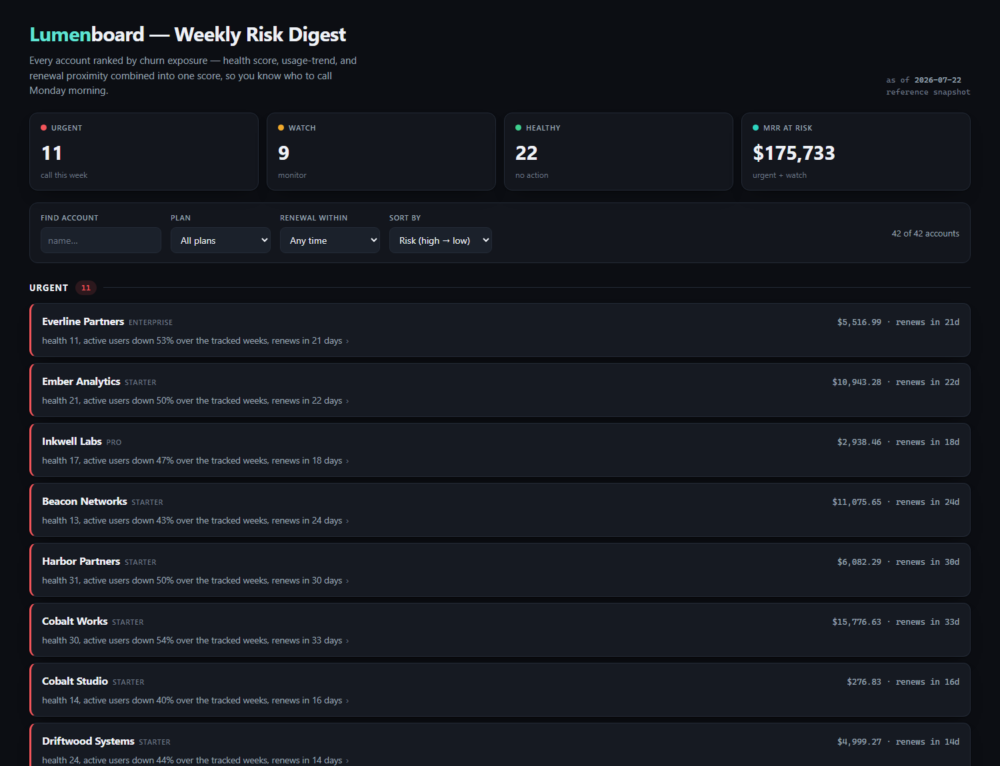

Surfacing at-risk accounts inside the tools your team already uses — live Lumenboard data, ranked by real churn risk, delivered where the work happens.
What you told us: the product and the data are strong — the gap is engagement. This section is what we heard, in your words before ours.
Accounts drift toward churn quietly. Nobody is watching closely, because watching means remembering to go and look.
The fix isn't a better dashboard. It's making the signal travel to the team instead of waiting to be visited.
We took one line especially seriously: this would be judged on tool design and error handling, not on a happy-path demo.
Two layers, shipped in sequence: the artifact that proves the value on a Monday, and the connector that makes it permanent.
Every account scored, bucketed urgent / watch / healthy, and ordered by exposure — with the reasoning on the row, so nobody has to trust a bare number.

42 accounts scored · 11 urgent · $175,733 MRR at risk
Health contributes directly: an account at health 20 carries four times the health risk of one at 80. Usage is read from the shape of the series, not its level — the last three weeks against the first three, where a halving counts as full risk.
Renewal proximity ramps over the final 90 days, so a renewal four months out barely registers and one next week dominates.
The three combine at 40 / 40 / 20 — health and usage carry the weight, renewal sharpens the timing rather than driving it.
Urgent requires a high combined score and a renewal actually approaching. Without that second condition, a chronically unhealthy account with a renewal a year out floods the urgent list and the list stops being worth opening.
Scoring never reads the system clock — the reference date is passed in, so the same inputs always produce the same answer and the behaviour is testable.
Under six weeks of history is flagged insufficient signal rather than quietly scored as safe.
Differentiation is measured, not asserted: word overlap between the two account-shaped tools is 0.15, and the check runs in CI so it can't quietly drift back toward duplicates.
How this was built matters as much as what was built — because it's what tells you whether the next thing will hold up too.
The artifact runs end-to-end on live data, and the API key never enters client code — the browser calls a same-origin backend that injects it server-side, so the credential stays out of the page and out of the model's context.
A health check runs before any tool goes live. All four error codes, both empty-but-valid cases and both pagination walks are covered by tests rather than by intention.
Response shapes are schema-checked before use, and free text the API returns is neutralised so it can't act as instructions.
Everything promised in the proposal is now built, including the two we finished last: client-side throttling — every call, retries included, passes through a limiter that bounds concurrency and paces request starts — and the roster tool's paging and filter inputs.
The accuracy on the previous slide is measured on our own scored set of accounts. A blind held-out check was designed into the process and never run.
So treat 1.00 as verified on what we could see, not as a blind result. Re-running that check is the first thing on our list, and we'd rather say so now than have you find it later.
Fabien and Amara · Synthetic Signal Associate Program · 31 July 2026